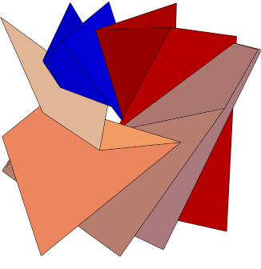
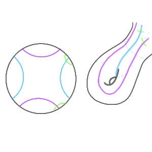
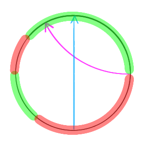

My research interests are in the field of geometric structures on manifolds and discrete subgroups of Lie groups. I am particularly interested in
affine and hyperbolic geometry, and their interplay. My current projects involve affine manifolds,
pseudo-hyperbolic manifolds, symplectic manifolds, and infinite-type surfaces. If you would like to read more about my past and
current research, as well as some future directions I find interesting, you can find my research statement here.

Here are a few selected talks you might have seen me give.
January 2026, Pathways Workshop: Topological and Geometric Structures in Low Dimensions & Geometry and Dynamics for Discrete Subgroups of Higher Rank Lie Groups , SLMath,Proper affine deformationsof positive representations
May 2025, Higher rank geometric structures, Higgs bundles and physics , IHP Paris,Proper affine deformationsof positive representations
April 2025, Lorentzian, Affine, and Hyperbolic Differential Geometry - in Memory of Todd Drumm, Brin Mathematics Center, Constructing proper affine actions.
October 2024, AMS 2024 Fall Western Sectional Meeting, UC Riverside, Constructing ptoper affine deformations of positive representations.
July 2024, AMS-UMI International Joint Meeting,, Palermo, Constructing proper affine deformations of positive representations.
April 2024, UT Autin Geometric Geometry Seminar, Constructing proper affine deformations of positive representations.
September 2023, Diverse Aspects of Groups, Geometry and Dynamics, Heidelberg University. Constructing proper affine actions.
December 2022, University of Maryland Geometry-Topology seminar, University of Maryland.Constructing proper affine actions via higher strip deformations.
September 2022, University of Virginia Geometry seminar, University of Virginia. Constructing proper affine actions via higher strip deformations.
September 2022, Nearly carbon neutral geometric topology conference, Anosov representations group. Constructing proper affine actions via higher strip deformations.
July 2022, GT GAPS. Constructing proper affine actions.
June 2022, lightning talk at Geometry, Arithmetic, and Groups, UT Austin. Proper affine actions of free groups.
April 2022, poster presentation at Graduate student topology and geometry conference, Georgia Tech. Constructing proper affine actions of Fuchsian groups.
February 2022, contributed talk at TWIMS 2022, Rice. Constructing proper affine actions.
October 2021, SAG Seminar, The University of Sherbrooke. Constructing proper affine actions.
May 2021, contributed talk at GTA Philadelphia. Constructing proper affine actions.
April 2021, contributed talk at Graduate student topology and geometry conference. Constructing proper affine actions.